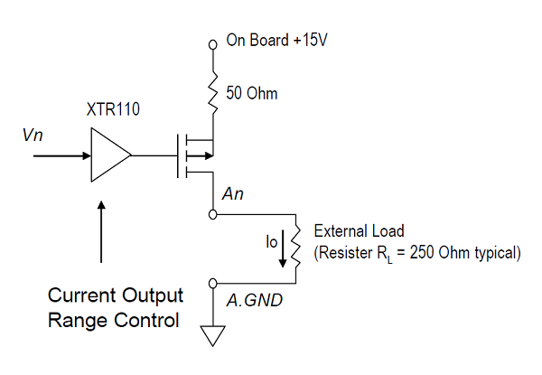

IO114B Pin Mapping — Reference information about the I/O module connector
| Pin | Signal | Pin | Signal |
|---|---|---|---|
| 1 | Digital Input 04 | 20 | Digital Output 04 |
| 2 | Digital Input 03 | 21 | Digital Output 03 |
| 3 | Digital Input 02 | 22 | Digital Output 02 |
| 4 | Digital Input 01 | 23 | Digital Output 01 |
| 5 | Digital GND | 24 | Digital GND |
| 6 | External reference voltage for voltage output | 25 | -15V Voltage output |
| 7 | +15V Voltage output | 26 | Analog GND |
| 8 | Analog GND | 27 | Current Output Channel 08 |
| 9 | Current Output Channel 07 | 28 | Voltage Output Channel 08 |
| 10 | Voltage Output Channel 07 | 29 | Analog GND |
| 11 | Analog GND | 30 | Current Output Channel 06 |
| 12 | Current Output Channel 05 | 31 | Voltage Output Channel 06 |
| 13 | Voltage Output Channel 05 | 32 | Analog GND |
| 14 | Analog GND | 33 | Current Output Channel 04 |
| 15 | Current Output Channel 03 | 34 | Voltage Output Channel 04 |
| 16 | Voltage Output Channel 03 | 35 | Analog GND |
| 17 | Analog GND | 36 | Current Output Channel 02 |
| 18 | Current Output Channel 01 | 37 | Voltage Output Channel 02 |
| 19 | Voltage Output Channel 01 |
The IO114 provides an on board +15V power supply. A precision voltage-to-current converter XTR110 implements the current output. Each current output channel (An) is a current source, which is controlled by the voltage of the corresponding voltage output channel (Vn).
The change of current output has the direct proportion comparing to the change of voltage output (0 to 10 [v]).
